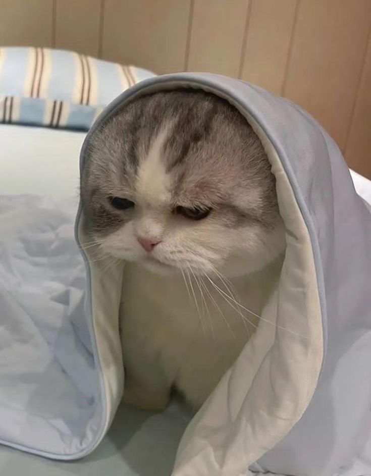
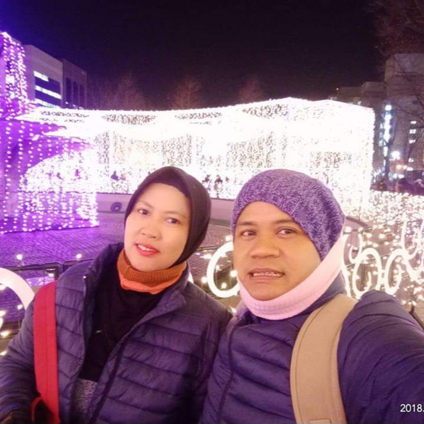
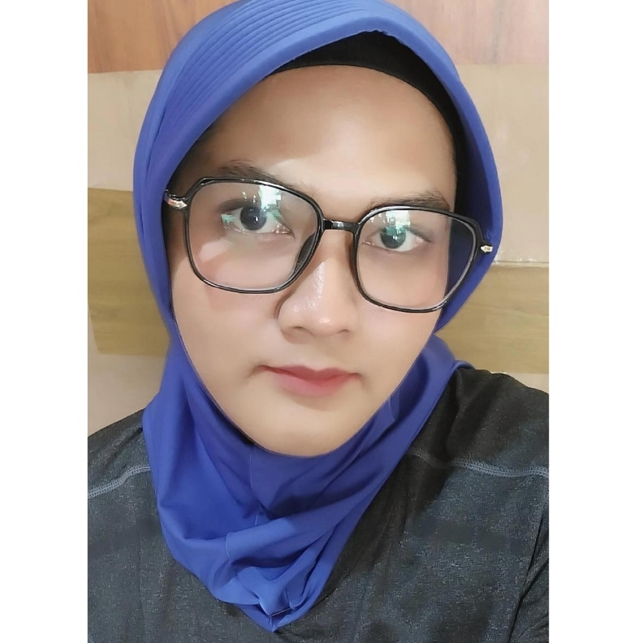
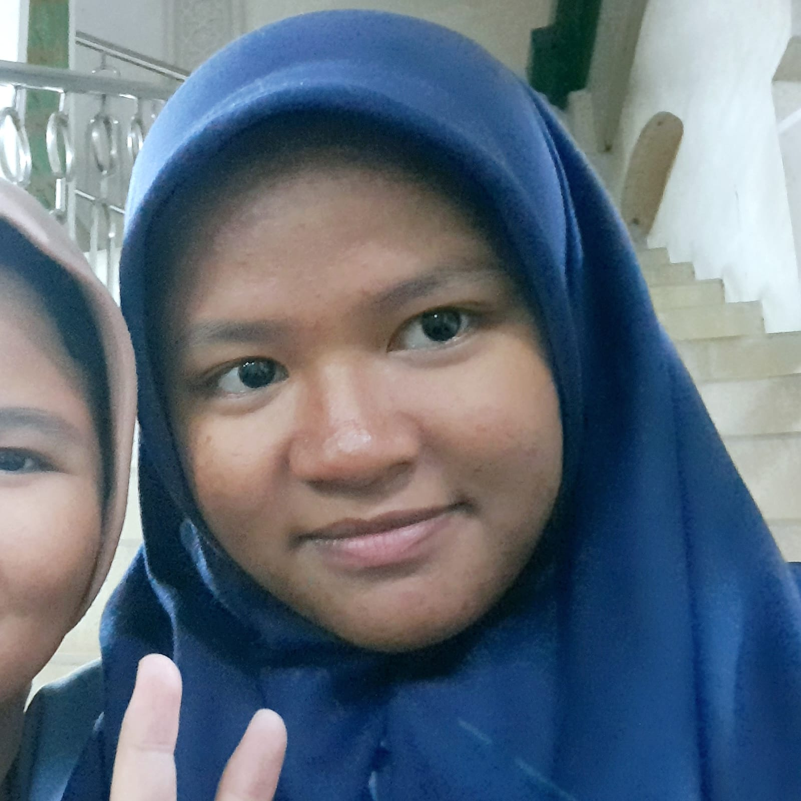

Eltern
Das sind meine Eltern. Sie heißen Eva und Aji. Sie sind 49 und 50 jahre alt. Sie kommen aus Cilegon und Jakarta, Sie sind Hausfrau und Selbstständig. Sie sind am 13. Oktober 1975 und 14. März 1974 geboren. Sie wohnen in Gunung Sindur. Die Lieblingsspeisen und -getränke meines Vaters sind scharfe Speisen, Kaffee und Kräutergetränke. Das Lieblingsessen und -getränk meiner Mutter sind Gemüse- und Fruchtsäfte.
Ini adalah orang tua saya. Nama mereka Eva dan Aji. Mereka berusia 49 dan 50 tahun. Mereka berasal dari Cilegon dan Jakarta, Anda adalah seorang ibu rumah tangga dan wiraswasta. Mereka lahir pada tanggal 13 Oktober 1975 dan 14 Maret 1974. Mereka tinggal di Gunung Sindur. makanan dan minuman kesukaan ayahku adalah makanan yang pedas, kopi, dan minuman herbal. makanan dan minuman kesukaan ibuku adalah sayur dan jus buah.

Schwester
Das ist meine Schwester. Sie heißt Gusti/Nurul. Sie ist vierundzwanzig Jahre alt. Sie ist am 23. Desember 2000 geboren. Sie kommt aus Jakarta, Sie wohnt in Gunung Sindur. Sie ist schülerin. Ihre Lieblingsspeisen und -getränke sind Brot und Tee.
Ini kakak perempuan saya. Namanya Gusti/Nurul. Dia berumur dua puluh empat tahun. Dia lahir pada tanggal 23 Desember 2000. Dia berasal dari Jakarta, dia tinggal di Gunung Sindur. Dia adalah seorang pelajar. makanan dan minuman favorit dia adalah roti dan teh.

Ich
ich heiße Haidar, ich bin sechzehn Jahre alt, ich komme aus Tangerang, ich wohne in Gunung Sindur, ich bin schülerin. Meine Lieblingsspeisen und -getränke sind herzhafte Speisen und Matcha.
Nama saya Haidar, Saya berumur enam belas tahun, saya berasal dari Tangerang, Saya tinggal di Gunung Sindur, saya seorang pelajar. Makanan dan minuman favorit saya adalah makanan gurih dan matcha.
Some of the projects we have made were taught by our teachers: Mrs. Nunung, Mrs. Noviana, Mr. Ridwan, Mr. poh, Mrs. Millah, and Mr. Wisnu
Video/Post
Language Lessons
Some of the projects we have made were taught by our teachers: Mrs. Endang, Frau. Faras, and Mrs. Lina
Video/Post
Productive Lessons
Some of the projects we have made were taught by our teachers: Mrs. Dinda, Mrs. Sinta, Mrs. Yurita, and Mr. Deden
Folder Video/Post